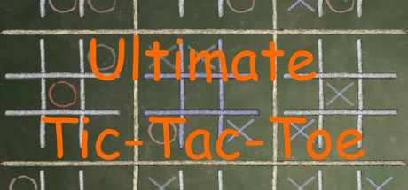

Ultimate Tic-Tac-Toe
Ultimate Tic-Tac-Toe
Details
|  | |
| Playtime | Not Played |
| Last Activity | Never |
| Added | 02/12/2022 9:35:48 |
| Modified | 18/05/2025 1:14:50 |
| Completion Status | Not Played |
| Library | Steam |
| Source | Steam |
| Platform | PC (Windows) |
| Release Date | 28/04/2015 |
| Community Score | 80 |
| Critic Score | |
| User Score | |
| Genre | Strategy |
| Developer | Tigerish Games |
| Publisher | Tigerish Games |
| Feature | Multiplayer Single Player |
| Links | Steam Official Website |
| Tag | Casual Competitive eSports Family Friendly Free to Play Indie Multiplayer Singleplayer Strategy Violent |
Description
Ultimate Tic-Tac-Toe takes the classic game of Tic-Tac-Toe and adds a strategic layer to it.
Description
- Each square of the 3x3 game board contains another, smaller, 3x3 game board.
- Where you make your move in a square of any small board, you send the opponent in the respective square of the big board.
- 3 in a row in a small board wins the small board and the big square.
- 3 small boards in a row wins the game.
- Strategize your play, plan your next move, let the opponent win some small boards, while you win the game!
- On the Forget game subtype, each 4th move of the same player in a board will erase his oldest move.
Features
- Classic and ultimate tic-tac-toe games.
- Each of the classic and ultimate types can also be played in Forget mode.
- Single-player.
- Hot-seat, a multiplayer mode from the same PC.
- Multiplayer, through LAN or Steam.
- 3 levels of difficulty.
- Rankings: play with users closer to your skill level.
- Leaderboards.
- Achievements.
Gameplay
- When the game starts, the player with the X piece will move first, and can place his piece wherever he wants. To let the opponent (AI or friend) place the first piece, you can choose to play with O. Placing the first piece will not give the player such a big advantage as in the classic tic-tac-toe game, he still needs to create a strategy in order to defeat you.
- Next, your opponent will have to play the board respective to the square that you've just filled.
- Your next move will be in a board that your opponent sends you to, given by the square that he just made his move on.
- What happens if the opponent sends you to an already won or draw board? Then you can go wherever you like, but be sure not to send your opponent to a closed board, because he would have the same advantage.
- After playing a little, you will see that, even though you could win a small board easily, the fact that if the move you make would put your opponent at an advantage, you could chose to not win that board at the time, or perhaps forfeit it, if it will give you an advantage to complete other 3 boards in a row and win the match.
- A draw board will not count for either X, nor O.
- You can also play on the Forget mode, which erases your 4th oldest game piece, thus having another strategic element which you must focus on, and there won't be any boards that end-up in ties.
- When playing against the AI, you have 3 choices of difficulty:
- Easy: The AI tries to send you to boards where it's most difficult for you to make a move, even though he could win others.
- Medium: The AI will always try to win small boards.
- Hard: The AI will win small boards, if it doesn't give you an advantage on the next move; it tries to create a balance between winning and not giving you the upper hand. It also has a random element to it, so it provides more diversified plays overtime.
- Easy: The AI tries to send you to boards where it's most difficult for you to make a move, even though he could win others.